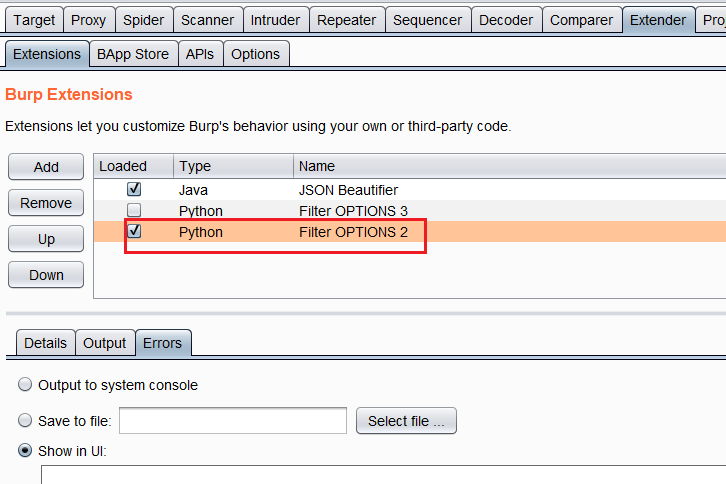
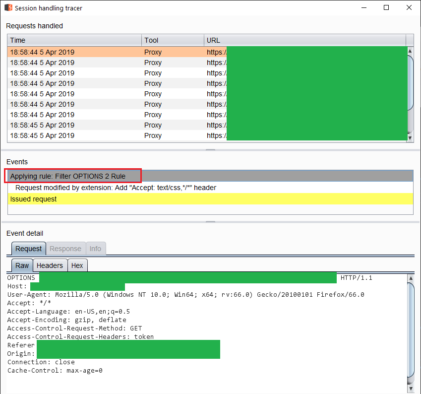
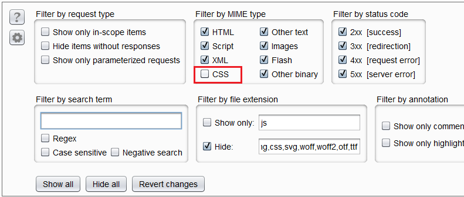

TL;DR: No matter what you do, your Burp extension cannot modify requests before they hit the HTTP History panel. You can modify requests after that and before they are sent out. We will discuss two ways to modify them with extensions. While the Match/Replace functionality is special, it has the same limitation (note how it has a separate tab that says auto-modified?).
Update October 2019: Latest version using burputils is at:
While testing this application, my HTTP history is full of CORS preflight requests. I wanted to filter all these OPTIONS.
It would be nice if we could filter these requests. Unfortunately, Burp's HTTP history filter does not allow filtering by HTTP verbs as of April 2019 (at least in 1.7.37, I have not looked at Burp 2.0).
After a bit of searching, I found this thread at support.portswigger.net and one of the suggestions was from the author of this extension:
It adds Content-Type: application/octet-stream to the response of every OPTIONS request. HTTP History then classifies that request as Other Binary and we can filter by that.
I decided to write the extension in Python but use a different MIME type for filtering. CSS is pretty benign and the chance of filtering something important is pretty small. Our extension needs to add Content-Type: text/css; charset=UTF-8 to every response.
But before that, I experimented a bit with modifying out-going requests. This is also an important functionality. I have seen applications where I needed to add a certain hash (e.g. HMAC of payload with a secret key) to each request or redirect the endpoint to another URL. This means an extension must modify requests coming into the proxy tool before sending them out.
Adding Content-Type to Requests
Let's write such an extension in Python. Our extension detects every request with OPTIONS verb and then adds Content-Type: text/css to the request. It doesn't really matter what we are adding, we just want to experiment. I will discuss two ways of accessing requests after they hit the proxy tool.
IHttpListener
We will use Portswigger's github.com/portswigger/example-traffic-redirector as a framework. The python extension is at:
It looks straightforward enough. The extension registers an HTTPListener.
# register an HTTP listener
callbacks.registerHttpListener(self)Then we have to implement IHttpListener. When implementing an interface, we need to implement all the methods. In this case, there's only one method processHttpMessage.
def processHttpMessage(self, toolFlag, messageIsRequest, messageInfo):
# removedLet's do something similar. Remember to add support for github.com/securityMB/burp-exceptions as seen here:
You can remove it in your final extension but it's very useful for debugging. Code for this extension is at:
This part is easy, we register a listener.
# from exceptions_fix import FixBurpExceptions
import sys
from burp import IBurpExtender
from burp import IHttpListener
class BurpExtender(IBurpExtender, IHttpListener):
#
# implement IBurpExtender
#
def registerExtenderCallbacks(self, callbacks):
# obtain an extension helpers object
self._helpers = callbacks.getHelpers()
# set our extension name
callbacks.setExtensionName("Filter OPTIONS 1")
# register an HTTP listener
callbacks.registerHttpListener(self)We have to implement processHttpMessage.
def processHttpMessage(self, toolFlag, messageIsRequest, messageInfo):
# removedInside, we need to modify messageInfo. It contains the original request and/or response. At the end of the function this will be the modified request/response.
messageInfo is of type IHttpRequestResponse which contains both request and its response. This method is called twice for each request. Once after the request hits the history and the other when the response reaches Burp but before it hits the history.
1. Check if it's a request
Return if we are dealing with a response.
# only process requests
if not messageIsRequest:
return2. Check if the request originated from the proxy
toolFlag is an enum that indicates where this request came from. All of the enums are at https://portswigger.net/burp/extender/api/constant-values.html. We are looking for TOOL_PROXY which is 4.
# only work on requests coming from proxy
if toolFlag != 4:
return3. Check if it's an OPTIONS request
Process the request to extract its HTTP method/verb. First we need to get the request bytes from the messageInfo object with IHttpRequestResponse.getRequest().
# get request bytes
requestBytes = messageInfo.getRequest()These bytes can be processed with IExtensionHelpers.analyzeRequest(byte[] request) to get an IRequestInfo object.
# get request info with https://portswigger.net/burp/extender/api/burp/IRequestInfo.html
requestInfo = self._helpers.analyzeRequest(requestBytes)We can extract the method/verb with getMethod().
# use getMethod and filter OPTIONS
if requestInfo.getMethod() != "OPTIONS":
return4. Add the new header
Similarly, we have a helper method to extract the request headers.
headers = requestInfo.getHeaders()This method returns a list (think string array) of headers. It's not a dictionary. Each line is in its own cell. We cannot search or do anything. We could write some helper methods that create a dictionary out of this list but that is for another time. Duplicate headers are a thing and we can hope that whatever is on the other side accepts them. In this case, we do not need to find and delete the previous Accept header, we will just add our own in the end.
# add header
headers.add("Accept: text/css,*/*")5. Re-create the message with the new headers
To re-create the message we need to use IExtensionHelpers.buildHttpMessage(java.util.List
To do so, we will need the headers (we already have them) and the message body byte. The message body is extracted with IRequestInfo.getBodyOffset():
# get body bytes
bodyBytes = requestBytes[requestInfo.getBodyOffset():]If we wanted to modify the body, we could do it here. Let's build the new message:
modifiedMessage = self._helpers.buildHttpMessage(headers, bodyBytes)Finally, we need to set it as the request for messageInfo.
messageInfo.setRequest(modifiedMessage)It Doesn't Work!!!
The request in HTTP History does not change. Unfortunately, we cannot modify the request before it hits the history tab. However, this extension is modifying the requests before they go out. If you chain another Burp, you can see the modified request.
Thinking that my extension was wrong, I searched and found another way to do the same thing.
ISessionHandlingAction
This blog post Automatically Adding New Header with Burp - optiv.com1 talks about adding a header to each outgoing request like a hash. I had written similar extensions in the past.
This second method allows us to perform an action on each request based on a session handling rule. To do so we must create a second version of our extension.
Code: https://github.com/parsiya/Parsia-Code/blob/master/burp-filter-options/blog/burp2.py
from burp import IBurpExtender from burp import ISessionHandlingAction class BurpExtender(IBurpExtender, ISessionHandlingAction): # # implement IBurpExtender # def registerExtenderCallbacks(self, callbacks): # obtain an extension helpers object self._helpers = callbacks.getHelpers() # set our extension name callbacks.setExtensionName("Filter OPTIONS 2") # register the extension to perform a session handling action # w/o this, the extension does not pop-up in the "perform action" part in session handling rules callbacks.registerSessionHandlingAction(self)
To implement ISessionHandlingAction we must create two methods:
getActionName()performAction(IHttpRequestResponse currentRequest, IHttpRequestResponse[] macroItems)
This is the name of the action that appears in the dialog when we want to run it on requests:
def getActionName(self):
return "Add \"Accept: text/css,*/*\" header"We do the manipulation inside performAction this time (we do not need macroItems here2):
def performAction(self, currentRequest, macroItems):
# get request bytes
requestBytes = currentRequest.getRequest()
# get request body
requestInfo = self._helpers.analyzeRequest(requestBytes)
# return if the verb is not OPTIONS
if requestInfo.getMethod() != "OPTIONS":
return
# add "text/css" to the "Accept" header
headers = requestInfo.getHeaders()
headers.add("Accept: text/css,*/*")
# re-create the message
# to recreate it we need headers (we already have them) and then the body
# get request bytes
bodyBytes = requestBytes[requestInfo.getBodyOffset():]
# if we wanted to modify the body, this would be the place
# build a new message with
modifiedMessage = self._helpers.buildHttpMessage(headers, bodyBytes)
# set the request to the modifiedMessage
currentRequest.setRequest(modifiedMessage)
# and we are done
returnWith this extension, we need to add it as a session handling rule as mentioned in the blog post. Be sure to load the extension in extender first and check that it has loaded without errors3.
 Extension loaded in BurpActivate the Extension
Go to Project Options > Sessions > Sessions Handling Rules and click on Add.
Note: sessions tracer here is a godsend when testing rules/extensions. Be sure to make use of it.
Give the rule a name and then click on Add under Rule Actions and select Invoke a Burp Extension.
If the action does not show up here, check that:
- The extension is loaded without errors.
- The extension has implemented
getActionName()
Switch to the Scope tab and remove everything except proxy under Tools Scope. The rule should run on requests coming from the proxy.
Under URL Scope select Include all URLs. There are other ways to set scope too.
And we're done. To see the request in action, open the sessions tracer.
 Request before modificationWe can see the rule being applied to OPTIONS.
This is done after the request hits the HTTP History and before it's sent out.
So it's not what we are looking for. What is the solution then?
Adding Content-Type to the Responses
The solution is adding Content-Type: text/css to the response of each OPTIONS request. I modified the first extension using a listener but the other one should work too.
Code: https://github.com/parsiya/Parsia-Code/blob/master/burp-filter-options/blog/burp3.py
def processHttpMessage(self, toolFlag, messageIsRequest, messageInfo): # do not process outgoing requests, we only care about responses if messageIsRequest: return # only care about requests coming from the Proxy, ignore other tools (e.g. Repeater) # see valid values here: https://portswigger.net/burp/extender/api/constant-values.html if toolFlag != 4: return # analyze the request for the response we are currently processing. # we need to identify if the HTTP verb is OPTIONS # get request bytes requestBytes = messageInfo.getRequest() # process request with https://portswigger.net/burp/extender/api/burp/IRequestInfo.html requestInfo = self._helpers.analyzeRequest(requestBytes) # use getMethod to filter non-OPTIONS if requestInfo.getMethod() != "OPTIONS": return # process the response and Inject "Content-Type: text/css; charset=UTF-8" # get response bytes responseBytes = messageInfo.getResponse() # process response responseInfo = self._helpers.analyzeResponse(responseBytes) # get response headers responseHeaders = responseInfo.getHeaders() # just add the duplicate content-type header to response and hope it works, YOLO! responseHeaders.add("Content-Type: text/css; charset=UTF-8") # re-create the response with new headers # get response body bytes responseBodyBytes = responseBytes[responseInfo.getBodyOffset():] # if we wanted to modify the body, this would be the place # build a new message modifiedMessage = self._helpers.buildHttpMessage(responseHeaders, responseBodyBytes) # set the response to this request. # we are processing it before it hits the history, it will appear as modified there messageInfo.setResponse(modifiedMessage) # and we are done return
And it works. Any new OPTIONS request is classified as CSS in Burp's HTTP History.
And we can filter them by CSS MIME Type.
 CSS MIME Type filterWhat Did We Learn Here Today?
- We can interact with requests in two ways:
- IHttpListener
- ISessionHandlingAction
- There's no way (that I know of) to modify requests before they hit history. But it's easy to modify them before going out.
- We can modify responses before they hit HTTP History.
- If Burp's filter does not allow us to filter by something, we can filter in the extension and make them a certain MIME Type and filter by that.